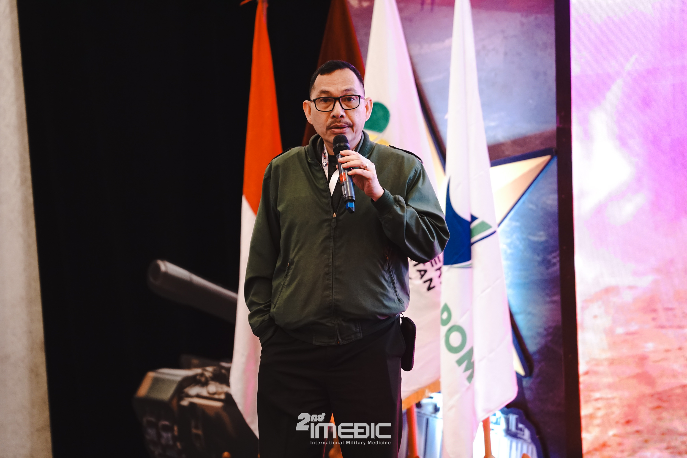
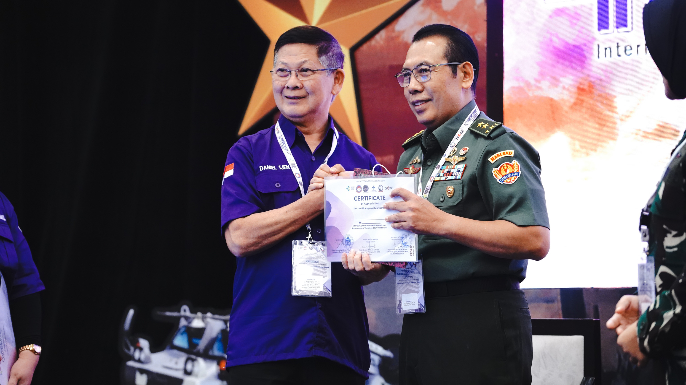
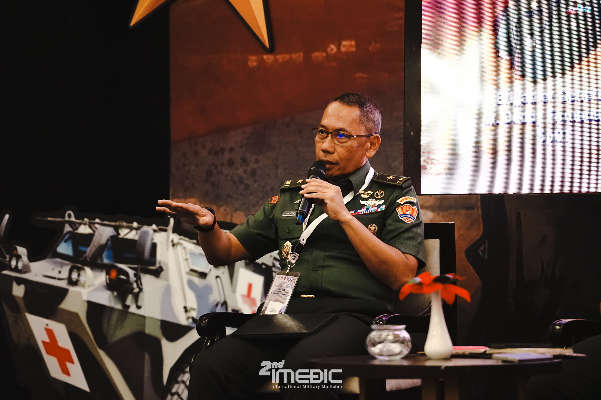
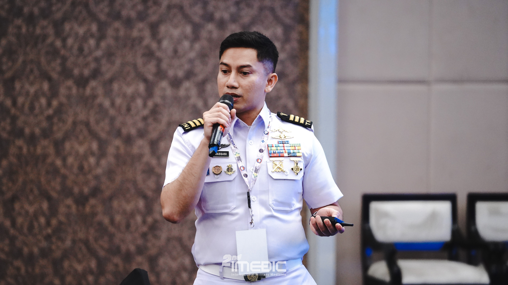
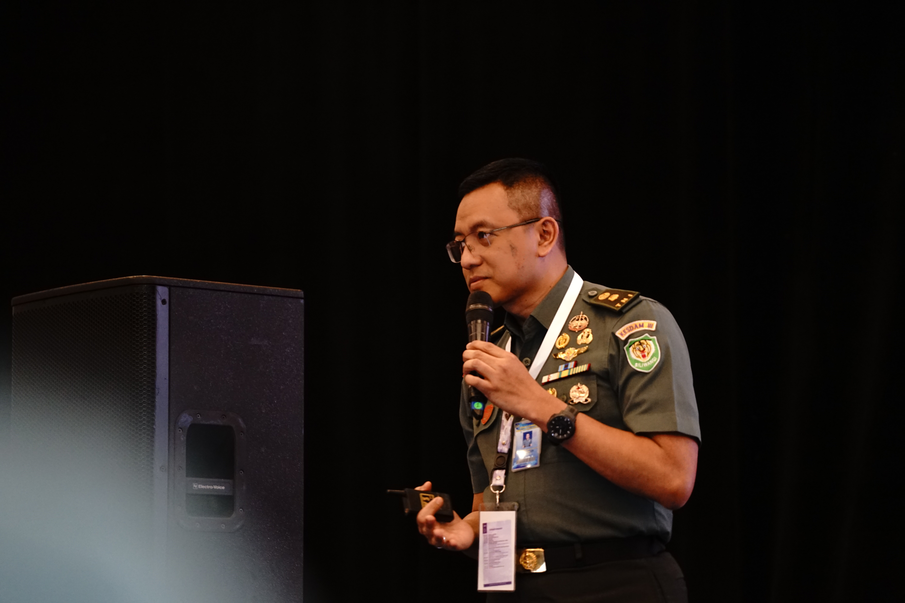

Program Kami
Rangkaian program yang kami sediakan untuk mendukung pertumbuhan profesional setiap anggota.





Setiap program kami dirancang untuk menjawab kebutuhan anggota di berbagai tahap karier — mulai dari dokter baru lulus hingga spesialis berpengalaman.
Ingin tahu jadwal terdekat dari program-program ini? Lihat agenda lengkap kami atau langsung bergabung sebagai anggota.